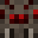

샘플 수집
Minecraft에서 몹에게 접근하고 주사기를 사용하여 샘플을 수집하세요.
Minecraft Java Edition · 앞서 해보기 0.2.1
실험실을 짓고 12가지 변종을 연구하세요. 변신하면 Minecraft 몹의 능력과 약점을 함께 얻습니다.

게임플레이
Minecraft에서 몹에게 접근하고 주사기를 사용하여 샘플을 수집하세요.
시퀀서를 사용하여 더 강력한 혈청을 잠금 해제하세요. G를 눌러 유전자 트리를 엽니다.
원심분리기로 처리하여 정제된 게놈을 얻습니다.
합성기에서 게놈, 돌연변이 유발원 염기, 촉매를 결합합니다.
변신
첫 번째 패시브 특성이 나타납니다.
몹의 패치가 피부에 퍼졌습니다.
몸의 형태가 변하기 시작합니다.
날아다니는 변종이 날아오르게 됩니다. 핸들이 없는 형태는 손을 잃습니다.
당신은 마피아의 모습을 취합니다. 변화가 더 이상 사라지지 않습니다.
혈청을 계속 투여하지 않으면 변신 진행도가 낮아질 수 있습니다. 완전한 형태에서 돌아오려면 역전 혈청을 사용하세요.
변종 목록
변종 카드를 열어 특징을 확인하세요.
Strength 어둠 속에서 재생한다
약점 햇빛에 탄다
Strength 화살이 더 세게 맞는다
Weakness 약한 뼈
Strength 크리퍼가 더 이상 쉭쉭거리지 않는다
Weakness 고양이 근처에서 공황에 빠진다

거미Strength 벽을 오른다: 벽에 붙으면 올라가고, 웅크리면 매달린다
Weakness 불에 취약하다
Strength 긴 다리로 블록 하나를 넘는다
약함 물과 비가 산처럼 태운다
Strength 아가미: 물속에서 숨 쉰다
Weakness 육지에서는 서툴다
Strength 비행: 점프 두 번. 비행은 허기를 소모한다. 비와 물에서는 날 수 없다
Weakness 물과 비가 불꽃을 끄고 고통을 준다
Strength 비행: 점프 두 번. 비행은 허기를 소모한다. 비와 물에서는 날 수 없다
약점 햇빛에 탄다
Strength 꽃가루: 근처 작물과 묘목이 더 빨리 자란다
약점 단것으로 산다: 꿀, 열매, 과일
Strength 늑대처럼 달린다
약점 고기만 먹는다
Strength 금이 있든 없든 피글린이 너를 동족으로 여긴다
Weakness 금 욕심: 금빛 물건을 버리지 않는다
Strength 수중의 몸: 부력 있는 빠른 수영, 아가미, 물속의 선명한 시야
Weakness 물속에서만 숨 쉰다. 땅에서는 공기가 떨어지고 시야가 흐려진다
mods 폴더에 넣으세요. 멀티플레이에서는 서버와 모든 플레이어가 같은 Mutagen 빌드를 사용해야 합니다.Pehkui는 몸 크기 조절을 위한 선택 사항입니다.